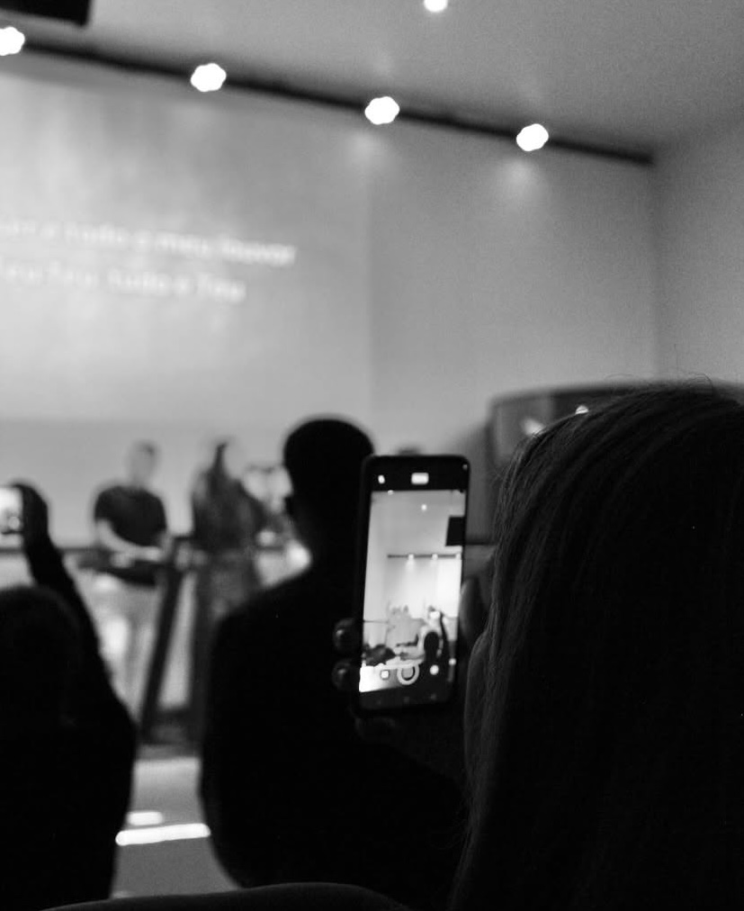
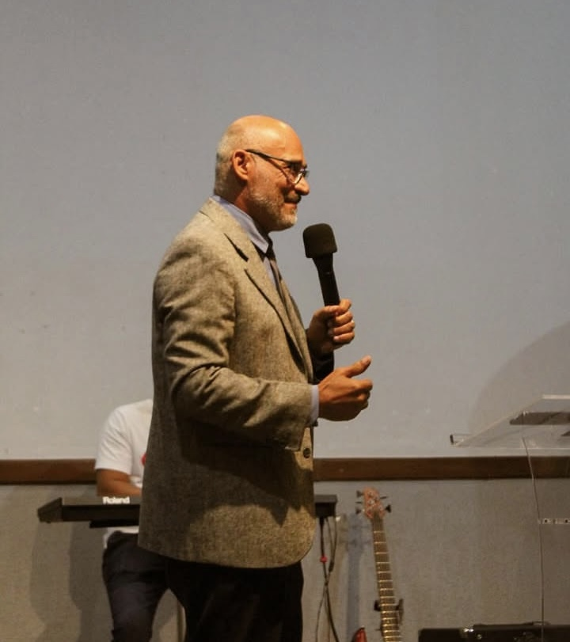
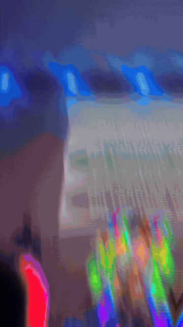
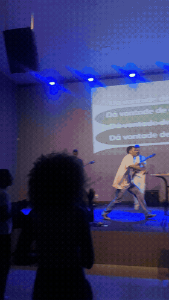
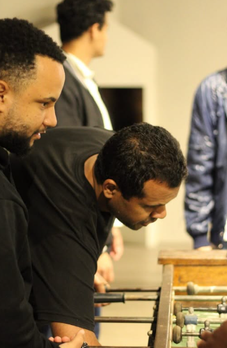
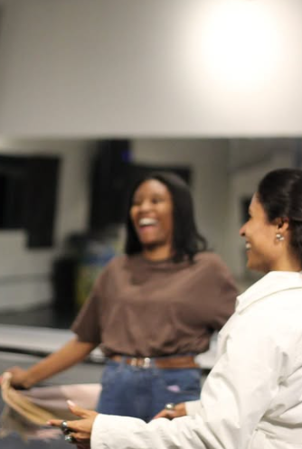
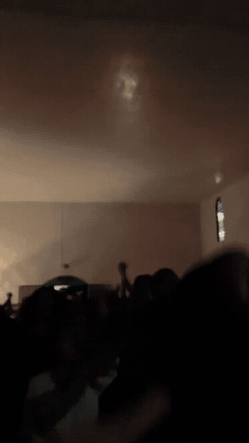

"A minha casa será chamada casa de oração para todas as nações." Marcos 11:17
Momentos de adoração, oração e palavra que transformam vidas.
Um tempo de busca, oração e adoração profunda no meio da semana.
O coração da nossa semana. Adoração, ministração da Palavra e comunhão.
Acompanhe também pelo Instagram. Conteúdo, transmissões e momentos de presença.

A Casa 42 nasceu de um chamado profético: ser um lugar onde pessoas de todos os cantos possam encontrar a Deus.
Somos uma comunidade de adoradores apaixonados pela presença do Espírito Santo e pela missão de alcançar todas as nações.
Nossa história →O encontro de meio de semana é um tempo de busca, oração e intercessão. Um momento para pausar a semana e renovar as forças na presença de Deus. Venha preparado para adorar e ser transformado.
O culto dominical é o coração da nossa semana. Um encontro cheio de adoração, ministração da Palavra e comunhão entre irmãos. Esperamos por você e sua família. Tragam seus amigos — a Casa é de todos.
📍 Rua João Miranda, 136
🏘️ Córrego das Calçadas — Santa Luzia / MG
🚗 Estacionamento disponível
📷 Instagram: @casaa.42
Ver no Google MapsConheça quem somos, o que cremos e o que nos move.

A Casa 42 — Casa de Oração para Todas as Nações — nasceu de um chamado profético: ser um lugar onde pessoas de todos os cantos possam encontrar a Deus.
O nome carrega o peso das Escrituras. Em Marcos 11:17, Jesus declara: "A minha casa será chamada casa de oração para todas as nações." Essa é a nossa identidade. Essa é a nossa missão.
Ser uma casa de oração aberta para todas as nações, levando o amor de Deus a cada pessoa, família e povo.
Ver vidas transformadas pelo poder do Espírito Santo e uma geração apaixonada por Deus e pela sua presença.
"A minha casa será chamada casa de oração para todas as nações." — Marcos 11:17

"Uma Geração conectada com o Senhor."
Um tempo de louvor e palavra, seguido de um pós-culto com jogos e muita comunhão com a galera.
Um encontro mais íntimo, de comunhão e crescimento em pequenos grupos.
Bastidores, convites e conteúdo pra geração ficar por dentro de tudo.




Conectada com o Senhor, em sintonia com a Sua presença, todos os dias. É pra isso que existe a Geração On.
Quero fazer parteConteúdo, bastidores e tudo da Geração On em primeira mão.
@geracaoon_